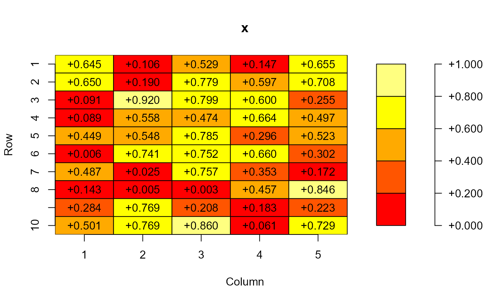

Visualizes a matrix with a colored heatmap and optionally a color key. It distinguishes between numeric and non-numeric matrices.
You may need to modify mar with the graphics::par() command from its default c(5.1,4.1,4.1,2.1).
For further see the vignette vignette('plot.matrix')
Usage
# S3 method for matrix
plot(
x,
y = NULL,
breaks = NULL,
col = heat.colors,
na.col = "white",
na.cell = TRUE,
na.print = TRUE,
digits = NA,
fmt.cell = NULL,
fmt.key = NULL,
spacing.key = c(1, 0.5, 0),
polygon.cell = NULL,
polygon.key = NULL,
text.cell = NULL,
key = list(side = 4, las = 1),
axis.col = list(side = 1),
axis.row = list(side = 2),
axis.key = NULL,
max.col = 70,
...
)Arguments
- x
matrix
- y
unused
- breaks
breaks for numeric values or values for
col- col
a vector of colors or a function, e.g. grDevices::heat.colors()] with one parameter
n- na.col
color for missing value (default: white)
- na.cell
to draw cells with missing values (default:
TRUE)- na.print
print NA (or any given characters) when values are missing. If
FALSE, nothing is printed. Ifna.cellisFALSE, this will have no effect.- digits
number of digits for numeric data or length of string for non-numeric data
- fmt.cell
format string for writing matrix entries, overwrites
digits, defaults toNULL- fmt.key
format string for writing key entries, overwrites
digits, defaults tofmt- spacing.key
spacing between plot and legend, key width, spacing between key and axis (default:
c(1,0.5,0))- polygon.cell
list of parameters used for
graphics::polygon()for heatmap- polygon.key
list of parameters used for
graphics::polygon()for key- text.cell
list of parameters used for
graphics::text()for matrix entries- key
list of parameters used for [graphics::axis(). If set to
NULLthen no information will be plotted. Instead ofkey=list(side=4)you may usekey=4orkey="right".- axis.col
list of parameters used for
graphics::axis()for axis of matrix columns. Instead ofaxis.col=list(side=1)you may useaxis.col=1oraxis.col="bottom".- axis.row
list of parameters used for
graphics::axis()for axis of matrix rows. Instead ofaxis.row=list(side=2)you may useaxis.row=2oraxis.col="left".- axis.key
as
key- max.col
numeric: if the distance between the text color and the cell color is smaller then
max.colthen eitherwhiteorblackwill be used as text color, defaults to70- ...
further parameter given to the
graphics::plot()command
Value
invisibly a list with elements
cell.polygon[[i,j]]the
polygonparameters used to draw the elements of the matrixcell.text[[i,j]]the
textparameters used to draw the elements of the matrixplotthe
plotparameters used to draw the basic plotaxis.colthe
axisparameters used to draw column axisaxis.rowthe
axisparameters used to draw row axiskey.polygon[[i]]the
polygonparameters used to draw the elements of the keykey.axisthe
axisparameters used to draw key axis
A NULL means the elements has not been drawn.
Details
A color key is drawn if either key (defaults to list(cex=1)) or fmt.key
(defaults to NULL) is not NULL.
If you want to plot the matrix entries you must set either digits or fmt.
For a non-numeric matrix digits gives the length of the string printed, a negative value
results in right-justified string. For a numeric matrix digits determines the number of
decimal places, a negative value uses a "exponential" decimal notation. You may set format
strings fmt and fmt.key directly. Settings digits leads to the following
format strings (n the absolute value of digits):
x numeric and digits>0: | "%+.nf" |
x numeric and digits<0: | "%+.ne" |
x non-numeric and digits>0: | "%+ns" |
x non-numeric and digits<0: | "%-ns" |
If no colors are given then the grDevices::heat.colors() will be used. Alternatively you may specify your own color function
that delivers a vector with n colors if called by col(n). The final colors and breaks used
depend if plot.matrix gets a numeric or non-numeric matrix.
Numeric matrix: In general it must hold length(col)+1==length(breaks).
- 1.
breaks==NULLandcol==NULL The colors are taken from
heat.colors(10)and the eleven breaks are calculated as an equidistant grid betweenmin(x)andmax(x).- 2.
breaks==NULLandcolis a color function Ten colors are taken from the color function and eleven breaks are calculated as an equidistant grid between
min(x)andmax(x).- 3.
breaks==NULLandcolis a vector of colors The
length(col)+1breaks are calculated as an equidistant grid betweenmin(x)andmax(x).- 4.
breaksare given andcol==NULL The colors are taken from
heat.colors(length(breaks)-1).- 5.
breaksare given andcolis a color function The
length(breaks)-1colors are taken from the color function.- 6.
breaksare given andcolis a vector of colors If not
length(col)+1==length(breaks)holds then thelength(col)+1breaks are calculated as an equidistant grid betweenmin(breaks)andmax(breaks).
Non-numeric matrix: In general it must hold length(col)==length(breaks). At first the number of unique elements in x is determined: nu.
- 1.
breaks==NULLandcol==NULL The colors are taken from
heat.colors(nu)and the breaks are set to the unique elements ofx.- 2.
breaks==NULLandcolis a color function The
nucolors are taken from color function and the breaks are set to the unique elements ofx.- 3.
breaks==NULLandcolis a vector of colors The
length(col)breaks are calculated as an equidistant grid betweenmin(x)andmax(x).- 4.
breaksare given andcolor==NULL The colors are taken from
heat.colors(length(breaks)).- 5.
breaksare given andcoloris a color function The
length(breaks)colors are taken from color function.- 6.
breaksare given andcoloris a vector of colors If not
length(colors)==length(breaks)holds then eitherbreaksorcoloris shorten to the shorter of both.
If the difference between polygon color and the text color is smaller max.col then as text color is
either white or black (depending which one is further away from the polygon color).
The distance is computed as \(\Delta C/3\) as in https://en.wikipedia.org/wiki/Color_difference#Euclidean given.
Note
The use of fmt or fmt.key have the same restrictions as the use of fmt in base::sprintf():
The format string is passed down the OS's sprintf function, and incorrect formats can cause the latter to crash the R process. R does perform sanity checks on the format, but not all possible user errors on all platforms have been tested, and some might be terminal.
Examples
par(mar=c(5.1, 4.1, 4.1, 4.1))
# numeric matrix
x <- matrix(runif(50), nrow=10)
plot(x)
plot(x, key=NULL)
plot(x, key=list(cex.axis=0.5, tick=FALSE))
plot(x, digits=3)

plot(x, breaks=range(x), digits=3, cex=0.6)
# logical matrix
m <- matrix(runif(50)<0.5, nrow=10)
plot(m)
plot(m, col=c("red", "blue"))
plot(m, key=NULL, digits=1)
# character matrix
s <- matrix(sample(letters[1:10], 50, replace=TRUE), nrow=10)
plot(s)
plot(s, col=topo.colors)
plot(s, digits=10)
plot(s, digits=1, col=heat.colors(5), breaks=letters[1:5])
plot(s, digits=1, col=heat.colors(5), breaks=c('a', 'c', 'e', 'g', 'i'))
# contingency table
tab <- table(round(rnorm(100)), round(rnorm(100)))
plot(unclass(tab))
# chisquare test residuals
cst <- chisq.test(apply(HairEyeColor, 1:2, sum))
col <- colorRampPalette(c("blue", "white", "red"))
plot(cst$residuals, col=col, breaks=c(-7.5,7.5))
# triangular matrix
x[upper.tri(x)] <- NA
plot(x, digit=2)
plot(x, na.print=FALSE)
plot(x, na.cell=FALSE)
# use the standard plot instead of plot.matrix
x <- matrix(runif(50), nrow=2)
plot(as.data.frame(x))
plot.default(x)
if (FALSE) {
# unload the package permanently with devtools
library("devtools")
unload('plot.matrix')
}